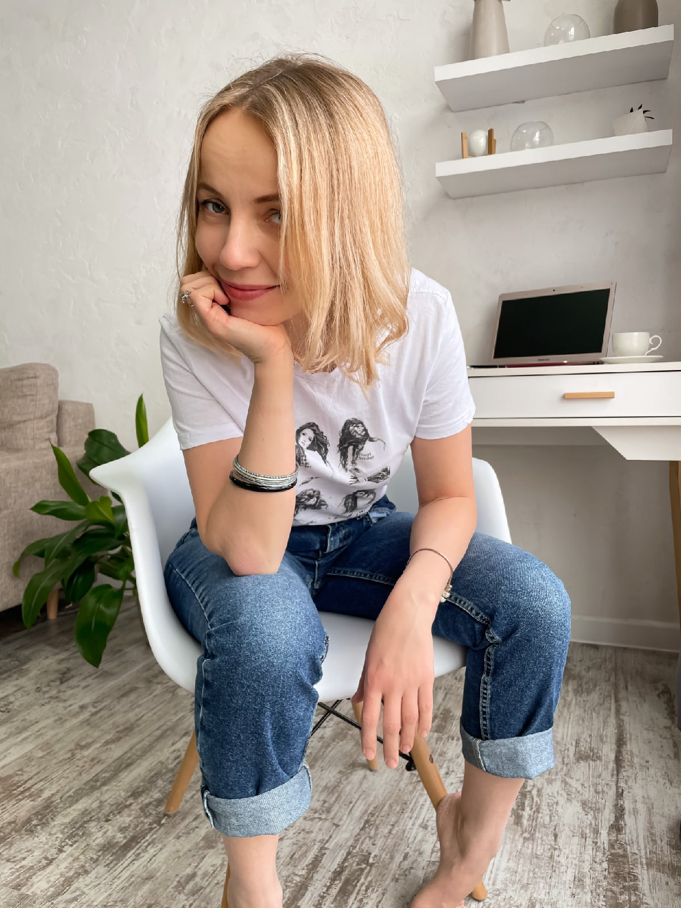

Бережная терапия для взрослых
Помогаю замечать неосознанные сценарии и постепенно возвращать свободу выбора — в отношениях с собой и людьми.

С какими запросами ко мне обращаются
Сложности в отношениях
Мы постоянно ссоримся или молчим неделями. Я чувствую холод, обиду или отдаление. Хочу близости, но не понимаю, как выйти из этого круга.
Срывы на детей и чувство вины
Я кричу на детей, срываюсь, а потом мучаюсь чувством вины. Обещаю себе быть спокойнее, но всё повторяется снова.
Тревога и внутреннее напряжение
Я постоянно прокручиваю мысли, жду худшего, не могу расслабиться. Даже когда всё спокойно, внутри нет покоя.
Выгорание и отсутствие сил
Просыпаюсь уже уставшим. Работа и привычная жизнь больше не радуют. Иногда хочется просто исчезнуть из всех задач и обязательств.
Потеря ориентиров
Я не понимаю, чего хочу на самом деле. Сложно принимать решения, кажется, что живу «не своей» жизнью.
Сложности с эмоциями и едой
Я заедаю тревогу, обиду или усталость. Понимаю, что это не решает проблему, но не знаю, как иначе справляться с чувствами.
Живу для других
Я подстраиваюсь, соглашаюсь, терплю. Говорить «нет» страшно. Мои желания словно всегда на втором месте.
Низкая самооценка и сомнения в себе
Я часто думаю, что недостаточно хорош(а). Боюсь ошибиться, переживаю, как меня оценивают, и редко чувствую уверенность в себе.
Актуальные программы
Перезагрузка самооценки
Осталось 4 местаКамерная терапевтическая группа для тех, кто хочет перестать бороться с собой и научиться выстраивать внутреннюю опору. 8 встреч глубокой работы в методе Транзактного анализа.
Как я работаю
В своей работе я опираюсь на транзактный анализ — структурированный метод, который помогает увидеть свои жизненные сценарии и привычные реакции. Модель «Родитель — Взрослый — Ребёнок» даёт ясность в том, что с нами происходит в отношениях и внутри себя.
Я сопровождаю вас в исследовании повторяющихся ситуаций и сценариев. Помогаю распутать клубок мыслей и чувств, поддерживаю в сложных моментах и остаюсь рядом, когда непросто.
Терапия — это постепенный процесс. От осознания — к изменениям в жизни. Мы учимся замечать свои привычные сценарии и пробовать действовать иначе — с опорой на свои потребности и реальные обстоятельства.
Обо мне
Интерес к психологии появился у меня ещё в подростковом возрасте. В 12 лет я с увлечением читала книги по общей психологии и разбирала особенности памяти, внимания и темперамента.
Во время первого декрета я получила высшее образование по психологии — о котором давно мечтала. Тогда стало понятно, что этот интерес — не просто увлечение.
Позже, во время второго декрета, я приняла решение не возвращаться в бизнес и развиваться в профессии. До этого мы с мужем вели совместный бизнес восемь лет. Это был важный этап жизни с высокой нагрузкой, ответственностью и непростыми решениями.
Мы с мужем вместе уже более 20 лет — это надёжный тыл, с которым любые непростые периоды проходят спокойнее. У нас трое детей: два сына и дочка. И, конечно, ещё один полноправный член семьи — наш золотистый ретривер.
Профессиональный путь
Моё образование — это не один диплом, а длительный и продолжающийся путь. Я последовательно углубляла знания, чтобы работать с клиентами бережно и на глубине.
Формат и условия работы
Я работаю с теми, кто готов к длительной терапии. Без волшебных таблеток и быстрых результатов — изменения требуют времени и регулярности.
Формат
Онлайн и очно (Ярославль)
Регулярность
Раз в неделю
Длительность
60 минут
Стоимость
5 000 ₽ / встреча
Стабильность создаёт основу для глубоких изменений
Написать в TelegramСвязаться со мной
Если что-то осталось неясным — напишите мне.